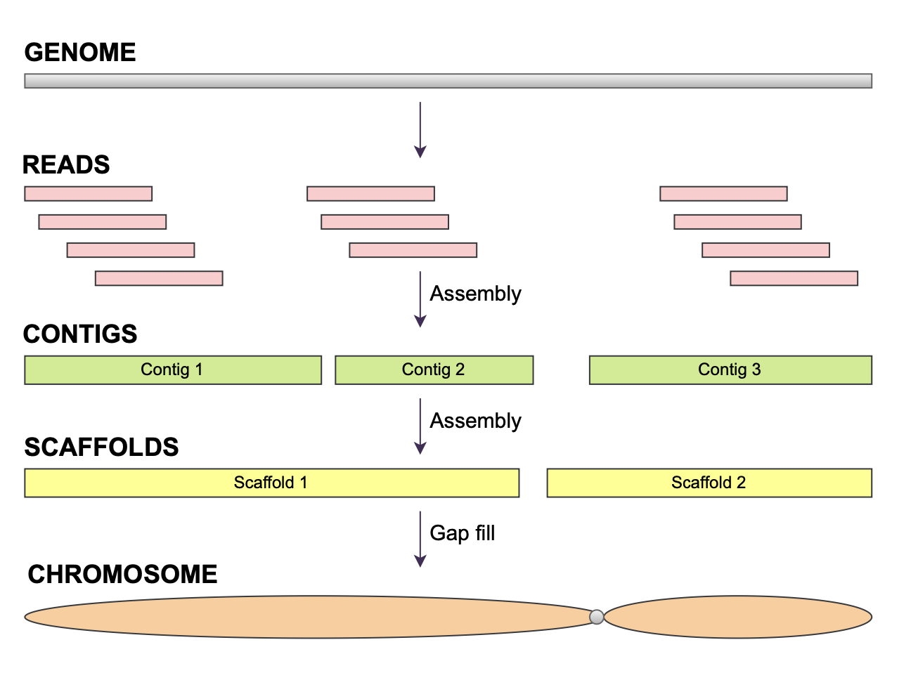

2 Sequencing Technologies and Data Formats
2.1 Why this chapter?
Chapter 1 framed genomics as the process of reading genomes and introduced core ideas such as reference assemblies, alignment, and de novo assembly as recurring operations in this course1–3. In this chapter, the focus shifts to the sequencing technologies themselves, the data they generate, and how platform choice interacts with experimental design and downstream bioinformatics workflows1,4,5.
By the end of the chapter, you should be able to:
- Explain how first‑, second‑, and third‑generation sequencing methods work at a conceptual level.
- Compare Illumina, PacBio, and Oxford Nanopore platforms in terms of read length, accuracy, throughput, and error profiles1,4,5.
- Decide when alignment to a reference is appropriate and when de novo assembly or hybrid approaches are needed1,4,5.
- Interpret key assembly quality metrics and understand how long‑range technologies (Hi‑C, optical maps, Strand‑seq) scaffold contigs to chromosomes4,5.
- Recognize how modern sequencing companies increasingly provide full “sequencer‑to‑variants” workflows and what that means for practicing bioinformatics1,5.
Along the way, we connect the historical genomics timeline from Chapter 1 to current platforms and highlight ethical questions raised by the rapid expansion of genomic data, especially in human populations2,6.
2.2 From timelines to laboratories
In Chapter 1, Figure 1.1 traced the history of genomics from the discovery of DNA as the hereditary molecule through Sanger sequencing, the Human Genome Project, high‑throughput short‑read platforms, and the emergence of long‑read technologies such as PacBio and Oxford Nanopore. Each milestone reflects two intertwined trends: improvements in chemistry and instrumentation, and increasingly sophisticated computational methods required to turn raw signals into usable sequence data1,4.
In practice, most modern genome projects follow a workflow similar to the one you saw in Lecture 2: experimental design and library preparation, sequencing on one or more platforms, quality control, alignment or assembly, variant calling or annotation, visualization, and long‑term data storage1. This chapter focuses primarily on the first half of that pipeline up to the point where reads are ready to be aligned or assembled; later chapters return to algorithms and downstream analyses in more detail.
Chapter 1 emphasized what we want from genomes—reference assemblies, annotations, and interpretable variation—while treating sequencing platforms as a black box. This chapter opens that box, because understanding how the data are generated is essential for making good decisions about coverage, library design, and downstream analysis choices.
2.3 First‑generation sequencing: Sanger and BAC‑by‑BAC
First‑generation sequencing refers to the Sanger dideoxy method, which dominated from the late 1970s through the early 2000s and underpinned the Human Genome Project1. In Sanger sequencing, a single‑stranded DNA template is copied by DNA polymerase in the presence of a primer, the four normal deoxynucleotides (dNTPs), and small amounts of chain‑terminating dideoxynucleotides (ddNTPs) labeled with distinct dyes1. A normal dNTP has a 3′‑OH group on the deoxyribose sugar that allows the next nucleotide to be added, whereas a ddNTP lacks this 3′‑OH, so once incorporated no further extension is possible and the growing strand stops at that base.
Because polymerase chooses between dNTPs and ddNTPs at random, the reaction generates a nested set of fragments that all start at the same primer and end at every possible position where that base occurs in the template1. Earlier protocols ran four separate reactions (one per ddNTP) and resolved the fragments on a polyacrylamide gel, with bands visualized by autoradiography; later instruments combined fluorescently labeled ddNTPs into a single reaction and read fragment size and dye color as they migrated past a laser in a capillary, automatically converting peaks into a base‑called chromatogram1. Modern capillary Sanger sequencing routinely yields reads of 500–1000 bp with error rates below 1%, which is why it remains the “gold standard” for validating variants and small loci today1.
From a whole‑genome perspective, however, Sanger chemistry is inherently low throughput. Each capillary run produces one read for one template, so thousands to millions of reactions and capillaries are required to cover a large genome1. Even with high‑density instruments like the ABI PRISM 3700, which multiplexed 96 capillaries and automated loading, producing enough sequence for a draft human genome required years of continuous operation and substantial personnel, reagent, and instrument costs1.
2.3.1 BAC‑by‑BAC genome sequencing
To scale Sanger sequencing to large genomes, the Human Genome Project and similar efforts used a BAC‑by‑BAC strategy. Genomic DNA was first fragmented into ~100–200 kb pieces and cloned into bacterial artificial chromosomes (BACs), producing a library of large‑insert clones that tiled across each chromosome1. Genetic linkage maps and physical maps (for example, restriction fragment patterns) were then used to order overlapping BACs along the chromosome, creating a scaffold or “tiling path” that indicated which region of the genome each clone represented1,4.
Each BAC in this tiling path was then sequenced by shotgun Sanger sequencing: the BAC insert was sheared into smaller fragments, cloned again, and hundreds to thousands of individual Sanger reads were generated and assembled into contigs using overlap‑layout‑consensus algorithms1. Finishing a BAC required closing gaps and resolving repeats by designing new primers, resequencing troublesome regions, and manually inspecting assemblies, often iterating many times to obtain a contiguous, high‑quality sequence1. Finally, finished BAC sequences were stitched together along the tiling path, using the BAC map to determine their order and orientation and filling any remaining gaps as resources allowed1,4.

Genome sequence terminology. Sequencing reads are short DNA fragments, contigs are continuous sequences formed from overlapping reads, scaffolds connect contigs into larger units, and chromosomes represent the largest scale of genome organization. Adapted from Wikimedia Commons; Source.{kind=link}
This pipeline produced extremely accurate reference sequences, but it illustrates why Sanger‑era genomics was inefficient and costly for whole genomes. Every step—constructing BAC libraries, mapping clones, performing thousands of Sanger reactions per BAC, and manually finishing assemblies—was labor‑intensive and required large teams and dedicated sequencing centers1,4. The Human Genome Project consumed over a decade and billions of dollars partly because Sanger chemistry and BAC‑by‑BAC strategies, while reliable, simply could not deliver base‑pair–level coverage at the scale and speed that later high‑throughput technologies made routine1.
From a modern perspective, Sanger’s legacy is conceptual. It established the idea that sequencing is a combination of chemistry (how nucleotides are incorporated and terminated) and signal processing (how fragment sizes and dye colors are turned into digital base calls with quality scores)1. Those same ideas—polymerase‑based synthesis, chain termination or detection events, and computational basecalling—reappear in second‑ and third‑generation platforms even as the physics of detection and the scale of data generation change4.
2.4 Second‑generation sequencing: short reads at scale
Second‑generation or “next‑generation” sequencing (NGS) refers to platforms that produce millions to billions of short reads in parallel by imaging clonal clusters or beads1. Several competing technologies appeared in the mid‑2000s—454 pyrosequencing (Roche), Solexa/Illumina sequencing‑by‑synthesis, Applied Biosystems SOLiD sequencing‑by‑ligation, and later Ion Torrent’s semiconductor‑based chemistry—each with its own way of coupling nucleotide incorporation to a detectable signal1.
2.4.1 Early NGS chemistries and why Illumina won
454 pyrosequencing amplified DNA on beads in emulsion PCR and flowed one unlabeled dNTP across a picotiter plate at a time; incorporation released pyrophosphate, which was converted to light via coupled enzymatic reactions, so peak height corresponded to the length of a homopolymer run1. The platform’s early strength was read length: several hundred bases when early Illumina reads were often <50 bp. However, homopolymer runs were error‑prone, throughput and scalability lagged behind, and the cost per base remained high, so 454 was eventually discontinued as Illumina read lengths and yields improved1,4.
SOLiD also used bead‑based clonal amplification but read sequence via ligation of fluorescently labeled oligonucleotide probes, encoding each base in color space rather than direct base calls1. This design provided theoretical error‑checking redundancy, but it came with practical problems: file sizes were large, interpretation required extra decoding steps, and the overall error rate and effective read length lagged behind Illumina’s steadily improving platforms1. Color‑space quality scores and formats were cumbersome enough that many downstream tools never fully supported them, which further reduced SOLiD’s appeal.
Ion Torrent eliminated optics entirely and detected the pH change (proton release) that accompanies nucleotide incorporation in semiconductor wells, trading read length and homopolymer performance for cheaper, smaller instruments1. It remains useful in some targeted amplicon and diagnostics settings but has not displaced Illumina for large‑scale genomics.
In contrast, Illumina’s (originally Solexa’s) sequencing‑by‑synthesis chemistry combined scalable throughput, a relatively simple short‑read error profile dominated by substitutions, and continuous improvements in read length, cost per base, and automation1,4. Over time this allowed Illumina to become the dominant short‑read platform used in research, clinical, and agricultural genomics.
2.4.2 Illumina sequencing‑by‑synthesis
In the canonical Illumina workflow, genomic DNA (or cDNA) is fragmented and specialized adapters are ligated to both ends; these adapters provide binding sites for primers, indices (barcodes), and short sequences complementary to oligos covalently attached to the flow‑cell surface1. During cluster generation, fragments hybridize to one type of surface oligo and are copied by polymerase; the original strand is washed away, and the copy bends over to form a “bridge” to the second oligo type, where it is extended again. Repeated cycles of this bridge amplification create dense clusters of clonal copies of the original fragment, each tethered at both ends to the glass slide1.
After amplification, one strand in each cluster is selectively cleaved and washed away and the remaining 3′ ends are blocked to prevent unwanted priming, leaving a lawn of single‑stranded clusters ready for sequencing. Sequencing‑by‑synthesis then proceeds in cycles: a sequencing primer anneals to each cluster, and a mix of four fluorescently labeled, 3′‑blocked reversible terminator nucleotides is added1. In each cycle, exactly one nucleotide is incorporated into each cluster based on the template base; a high‑resolution camera images the flow cell to record the color and intensity at each cluster; then the dye and blocking group are chemically removed so the next cycle can proceed. The number of cycles determines the read length, typically 75–300 bases for most current instruments1.
Paired‑end libraries exploit the fact that both ends of each fragment have adapters. After Read 1 is complete and index reads have been acquired, the extension product is melted away, the intact template folds over to the opposite surface oligo, and a new primer initiates Read 2 from the other end of the fragment. Index 1 and index 2 reads are interleaved into the run capture with the sample barcodes, allowing hundreds of libraries to be pooled on a single lane of sequencing.

This figure summarizes the four main stages of an Illumina run: library preparation with adapters, bridge amplification to form clusters, cyclic sequencing‑by‑synthesis with fluorescent nucleotides, and imaging to produce per‑cluster intensity traces that are converted into base calls. Scientists receive FASTQ files from these reads which will be covered more in the next chapter. Created with BioRender.com.
2.4.3 Throughput, evolution, and where sequencing happens now
Modern Illumina instruments routinely generate paired‑end reads of 150–300 bp, with total outputs ranging from a few gigabases per run on benchtop systems (e.g., MiSeq) to many terabases per run on high‑end systems (e.g., NovaSeq) at very low per‑base error rates1. Each cycle’s fluorescence image is converted into intensity traces and then into base calls with associated PHRED‑scaled quality scores, which downstream tools use to weight alignments and variant calls; the FASTQ format that stores these calls and quality scores is introduced formally in Chapter 3.
Illumina has continued to innovate even as long‑read platforms have matured. Patterned flow cells that regularize cluster positions, two‑channel or one‑channel dye schemes that reduce optical complexity, steadily higher cluster densities, and improved chemistries have all driven large gains in throughput and reductions in cost per base while maintaining or improving accuracy4,5. As a result, short‑read NGS remains the workhorse for high‑sample‑number studies—population resequencing, exomes, RNA‑seq, ChIP‑seq, and many clinical assays—even when long‑read data are used for assembly or structural variant discovery.
In the early NGS era, many universities and research institutes operated their own sequencing cores with 454, SOLiD, and later Illumina instruments, employing dedicated staff to handle library preparation, runs, and first‑pass QC1. As instruments became larger, more expensive, and more specialized, and as commercial providers began to offer highly competitive pricing and turnaround times, many institutions shifted toward outsourcing most sequencing. At Auburn, for example, several labs still maintain older Illumina machines for small projects or pilot data, but most large‑scale sequencing is sent to external facilities such as Novogene, HudsonAlpha (Huntsville, Alabama), or similar providers that operate high‑throughput Illumina platforms at scale.
2.4.4 Strengths and limitations of short‑read NGS
Short‑read NGS revolutionized genomics by making whole‑genome, whole‑exome, and RNA‑seq experiments affordable and practical for many labs1,6. At the same time, the short read lengths and PCR‑based library preparation introduce characteristic challenges that you will see repeatedly in this course and that are discussed in detail by van Dijk et al. 20184:
Assembly: De novo assembly is difficult when reads are much shorter than common repeats and structural variants. Short reads cannot uniquely span many repeat families, so assemblers break contigs at these points, resulting in fragmented genomes with hundreds to thousands of contigs and potential mis‑assemblies in repeat‑rich regions4,5.
Phasing: In genetics, phasing (or haplotype phasing) is the crucial process of determining which genetic variants are located together on the same haplotype during inheritance from each parent. Because short reads cover only a few hundred bases, they often cannot connect heterozygous variants that are far apart on the same chromosome copy. This makes it hard to determine which alleles co‑occur on the same haplotype (maternal vs paternal) and limits our ability to study inheritance patterns of compound heterozygosity and complex haplotypes in human and non‑human genomes4,5.
Transcript identification: RNA‑seq with short reads can quantify gene‑level expression well, but reconstructing full‑length transcript isoforms is challenging. Short reads provide only local views of exon–exon junctions, so many possible isoform combinations are consistent with a given set of reads unless sequencing depth is extremely high; long‑read transcriptomics (e.g., PacBio Iso‑Seq or nanopore cDNA/direct RNA) addresses this limitation by reading complete transcripts4,5.
GC bias: PCR amplification during library prep and cluster generation is less efficient at extreme GC contents. Regions that are very GC‑rich or GC‑poor therefore receive lower coverage, leading to false negatives in variant calling and uneven representation in assemblies and RNA‑seq experiments4.
These limitations motivated both the development of third‑generation long‑read technologies and a wave of algorithmic advances—better mappers, local re‑assembly around structural variants, graph‑based references, and specialized isoform reconstruction tools—that you will encounter in Chapters 3–5 and beyond. This is also why you might notice that in Figure 1.1, the Human Genome is often cited as having been completed in 2003, but the complete Telomere-to-Telomere (T2T) genome assembly took nearly two more decades to complete, largely assisted by third-generation sequencing efforts.
2.5 Third‑generation sequencing: long reads and single molecules
Third‑generation or long‑read sequencing (LRS) describes technologies that read individual DNA or RNA molecules in real time, producing reads that can span tens to hundreds of kilobases4,5. Two major players are Pacific Biosciences and Oxford Nanopore Technologies (ONT), alongside several synthetic and linked‑read approaches that attempted to bridge the gap between short‑ and long‑read data4,7.
2.5.1 PacBio SMRT and HiFi
Pacific Biosciences (PacBio) single‑molecule real‑time (SMRT) sequencing uses tiny observation chambers called zero‑mode waveguides (ZMWs), each containing a single DNA polymerase complexed with a circular “SMRTbell” template4. Fluorescently labeled nucleotides diffuse into the ZMW; as the polymerase incorporates bases, short pulses of fluorescence are recorded in real time and converted into a continuous long read4,5.
Early SMRT runs produced continuous long reads (CLRs) tens of kilobases long but with raw error rates around 10–15%, dominated by random insertions and deletions4. This is why early genome assembly papers using long read data were often completed with short read sequences to improve accuracy. Modern workflows instead emphasize HiFi (high‑fidelity) reads where the polymerase repeatedly circles the same insert, generating multiple passes from which a circular consensus sequence can be derived, trading some maximum length for accuracies ≥99.9% over 10–25 kb5,7. Because polymerase kinetics depend on base modifications, SMRT sequencing can also directly detect certain DNA methylation events when analyzed with specialized software4,5.
Improvements in polymerase engineering, fluorescent chemistry, and consensus algorithms have steadily moved PacBio from a noisy long‑read platform toward one that can rival or exceed Illumina for small‑variant calling in many contexts, while still providing long‑range information for assembly, phasing, and structural‑variant discovery4,5,7.
![Schematic of PacBio single-molecule real-time sequencing. Panel A shows a DNA polymerase complex immobilized in a zero-mode waveguide (ZMW) observing fluorescently labeled nucleotide incorporation during circular consensus sequencing. Panel B illustrates the ZMW structure, in which excitation is confined to a very small detection volume near the bottom of the well. Panel C depicts the sequence of nucleotide-binding and incorporation events that generate pulses of fluorescence during polymerase synthesis. Panel D shows an example fluorescence trace in which colored pulses correspond to incorporation of different nucleotides during real-time sequencing.](images/Figure_2_2_PacBio.png)
Overview of Pacific Biosciences’ Single-Molecule Real-Time Sequencing (SMRT) Technology. (A) A DNA polymerase anchored at the bottom of a zero-mode waveguide incorporates fluorescently labeled nucleotides while synthesizing DNA. (B) The ZMW optical geometry restricts excitation to a tiny observation volume, reducing background fluorescence from unincorporated nucleotides. (C) Sequential nucleotide binding, incorporation, and fluorophore cleavage produce base-specific fluorescence pulses. (D) Representative fluorescence intensity trace showing nucleotide-specific signals during real-time sequencing. Figure adapted from Rhoads and Au (2015)8.
2.5.2 Oxford Nanopore Technology
Oxford nanopore sequencing takes an entirely different physical approach. DNA or RNA molecules are threaded through protein nanopores embedded in a membrane that separates two ionic buffer chambers; as a stretch of nucleotides occupies the constriction of the pore, it perturbs the ionic current in a sequence‑dependent way4. The resulting “squiggle” of current values is decoded by basecalling software into nucleotide sequences, using increasingly sophisticated deep‑learning models5,7.
In principle, nanopore read length is limited only by input molecule length and stability; with careful high‑molecular‑weight DNA extraction, reads with N50 values around 100 kb and individual reads approaching or exceeding one megabase have been reported4,5. Early nanopore chemistries had raw error rates of 20–30%, with systematic difficulties in homopolymers and certain motifs, but newer pore designs (for example, R10), duplex sequencing of both strands, and improved basecalling have raised simplex accuracies to around 99.6% and duplex accuracies toward 99.9% in favorable conditions5,7. ONT can sequence native RNA directly as well as cDNA, and because the ionic‑current signal is sensitive to base modifications, the same data can be re‑analyzed to infer some DNA and RNA epigenetic marks4,5,7.
ONT’s product line ranges from pocket‑sized MinION devices powered by a laptop to large PromethION instruments with many flow cells running in parallel, making it possible to deploy sequencing in field settings as well as high‑throughput labs4,5.

Oxford Nanopore sequencing workflow and signal detection. (1) DNA is loaded into the sequencer and enters the flow cell, where it accesses active nanopores. (2) A motor protein controls translocation of single-stranded DNA through the nanopore as the molecule is unwound. (3) Base-specific changes in ionic current are detected and converted into nucleotide sequence by base-calling software. Image adapted from Oxford Nanopore Technologies and created in BioRender. Stevison, L. (2026) https://BioRender.com/xa6ofje
2.5.3 Synthetic and linked‑read approaches
Between “pure” short‑read and true single‑molecule long‑read platforms, several synthetic long‑read and linked‑read methods attempted to recover long‑range information from short reads. Examples include 10x Genomics Chromium linked‑reads, which partitioned high‑molecular‑weight DNA into microdroplets, barcoded fragments within each droplet, and then sequenced the barcoded fragments on an Illumina instrument so that short reads sharing a barcode could be associated with the same original long molecule4. Other approaches (for example, Moleculo/Illumina TruSeq Synthetic Long Reads) physically separated long molecules, amplified them, and computationally reassembled short reads back into “synthetic” long reads4.
These methods were attractive because they worked with standard short‑read sequencers and avoided some of the early high error rates of PacBio and ONT. However, effective molecule lengths were constrained by DNA quality, barcode collisions and uneven coverage complicated analysis, and costs were not dramatically lower than true long‑read sequencing as PacBio and ONT matured4,5,7. As consensus accuracies for HiFi and duplex nanopore reads climbed and per‑base costs fell, many synthetic and linked‑read products were discontinued or shifted toward niche structural‑variant and phasing applications.
2.5.4 Comparing major platforms
The table below summarizes key properties of the three platforms you will encounter most often in this course. Three practical differences matter: typical read length, error profile, and run scale1,4,5. Exact numbers vary with specific instruments and chemistries, but the qualitative trade‑offs are stable.
| Platform | Typical read length | Typical accuracy | Typical throughput per run | Key strengths | Key limitations |
|---|---|---|---|---|---|
| Illumina NGS | 150–300 bp paired‑end | Very high (≈99.9%) | 10s–1000s of Gb (instrument‑dependent) | Cost‑effective short reads; variant calling; RNA‑seq quantification1 | Repeats and SVs; limited phasing; GC bias4,5 |
| PacBio HiFi | 10–25 kb consensus reads | Very high (≥99.9%) | 10s–100s of Gb HiFi | Accurate long reads; assembly; SVs; phasing; some methylation detection4,5 | Instrument cost; relatively shorter than ultra‑long nanopore reads |
| ONT nanopore | 10–100+ kb; Mb possible | ~99–99.9% (chemistry‑dependent) | 10s of Gb (MinION) to Tb (PromethION) | Very long reads; portable devices; direct DNA and RNA; base‑modification detection4,5,7 | Higher error for some contexts; protocol‑sensitive performance |
Later chapters return to these platforms in the context of specific analysis tasks such as structural‑variant discovery, genome assembly, and full‑length transcriptomics, and to how improvements in chemistry and analysis have kept long‑read technologies competitive with short‑read NGS4,5,7.
2.6 Matching technology to biological questions
Choosing a sequencing technology is fundamentally an experimental design decision. The same genome can be sequenced and analyzed in very different ways depending on whether the primary goal is variant discovery, de novo assembly, transcriptome characterization, or epigenetic profiling1,4,7.
In Lab 2 you will design a hypothetical genome project, choosing sequencing platforms and workflows based on the trade‑offs discussed in this chapter1,4,5. You will also locate your project within the five perspectives on genomics described by Pevsner, which extend the three perspectives from Chapter 1.
Keep Lab02 in mind as you read: note which platforms and experimental designs would best support the kinds of questions you are most interested in. Lab02 will integrate the knowledge across Chapters 1-3 into a genome analysis narrative, so start thinking about this assignment now and it will be due after we finish Chapter 5.
In practice, many modern projects use hybrid strategies: long reads provide the backbone for assembly or SV discovery, while inexpensive short reads polish base‑level accuracy, improve small‑variant calling, and support large sample sizes1,4,5.
- Labs 4, 7, and 9 (see Appendix C) use Illumina short‑read data and the sacCer3 reference genome to illustrate how platform choice, coverage, and error profiles affect QC, alignment, and variant calling.
- Later projects (see Appendix B) highlight how long‑read and hybrid assemblies from vertebrates support comparative genomics questions about gene families such as PRDM9.
2.6.1 Alignment versus assembly in practice
Chapter 1 introduced alignment and de novo assembly as core computational operations1,2. Here, we emphasize how platform choice and experimental goals determine which operation is primary.
2.6.1.1 Alignment to a reference
For organisms with high‑quality reference genomes, most short‑read workflows begin by aligning reads to the reference using algorithms such as BWA or Bowtie2, producing SAM/BAM files that record alignment positions and quality metrics1. Alignment is the backbone of variant calling, read‑depth analysis, and many RNA‑seq and ChIP‑seq methods; its performance depends on read length, error rate, and the divergence between sample and reference1.
Long reads can also be aligned, and specialized mappers have been developed to handle higher error rates and complex structural variation. In lecture you saw how long‑read alignments make it easier to resolve large insertions, tandem repeats, or transposable element insertions that short reads may miss entirely4,5.
2.6.1.2 De novo assembly and graph‑based references
When no good reference exists—or when the reference is known to be incomplete or structurally divergent—de novo assembly reconstructs the genome directly from reads. Classical short‑read assemblers typically use de Bruijn graph formulations, breaking reads into k‑mers and finding Eulerian paths that traverse the graph to produce contigs1. Assemblies from short reads alone often fragment into many contigs because repeats longer than the read length create ambiguous graph structures4.
Long‑read assemblers instead work with overlap graphs or string graphs that leverage long overlaps between reads, greatly reducing ambiguity and producing much larger contigs4,5. However, even high‑quality long‑read assemblies typically need additional information to be oriented and ordered into chromosome‑scale scaffolds. The field is also moving toward graph‑based pangenomes, where multiple haplotypes or assemblies are combined into a single graph structure that better represents population‑level variation than any single linear reference5.
Later in the book, a guest lecture and accompanying chapter will dig into assembly algorithms and pangenome graphs in more detail; at this point the key idea is that sequencing technologies and algorithms co‑evolve, and practical decisions about assembly strategy must take both into account.
2.6.2 Assessing assemblies: the three C’s
Genome assemblies are often evaluated using three high‑level criteria sometimes called the “three C’s”: contiguity, completeness, and correctness1,4,5. This will be covered in more depth later when we discuss genome assembly in depth, but for the sake of helping you with the reading this week, I have provided an overview of basic assessment criteria that are discussed in the paper.
2.6.2.1 Contiguity
Contiguity describes how fragmented an assembly is. The most widely reported metric is N50, the contig (or scaffold) length such that all contigs of that length or longer contain 50% of the assembled bases1,4. Assemblies with high contig N50 and scaffold N50 values are generally more useful for downstream analyses and annotation.
However, N50 alone can be misleading. Aggressive assemblers may artificially join contigs through repeats or low‑confidence overlaps, inflating N50 at the cost of mis‑assemblies that misrepresent the true genome structure4,5. Later labs will show you how to plot contig length distributions and use multiple metrics to judge contiguity.
2.6.2.2 Completeness
Completeness asks how much of the expected gene content is represented in the assembly. A widely used tool is BUSCO (Benchmarking Universal Single‑Copy Orthologs), which examines the presence and integrity of conserved single‑copy genes expected for a given clade9. High BUSCO scores (e.g., ≥95% complete) suggest that most core genes are present; low scores can indicate missing regions, assembly fragmentation, or annotation issues1,5.
2.6.2.3 Correctness
Correctness encompasses both base‑level accuracy and larger‑scale structural validity. Common approaches include:
- Mapping reads back to the assembly and examining mismatch and indel rates, discordant paired‑end mappings, and depth anomalies that suggest mis‑joins or collapses1.
- Comparing assemblies built from different technologies (e.g., long reads vs short reads) to identify consistent features and potential errors4,5.
- Using independent long‑range data such as Hi‑C, optical maps, or Strand‑seq to confirm or correct scaffold orientation and order5.
In the paper you were assigned for this week10, they generated several novel genome assemblies. Look closely at the methods they used. Which sequencing technologies did they use to generate the genome assembly? Which metrics did they use for quality assessment of the genome? Do you agree with their conclusions regarding quality of the genomes they generated?
2.6.3 Long‑range scaffolding: 3D genome methods and optical maps
Even with long reads, de novo assemblies often consist of contigs rather than full chromosomes. Long‑range scaffolding methods exploit physical properties of chromosomes to order and orient contigs4,5.
2.6.3.1 Hi‑C and other conformation capture assays
High‑throughput chromosome conformation capture (Hi‑C) measures which regions of the genome are physically close to each other in the nucleus by crosslinking chromatin, digesting and ligating DNA, and sequencing junctions between interacting loci5. Because loci on the same chromosome interact more frequently than loci on different chromosomes, and nearby loci interact more frequently than distant ones, Hi‑C contact maps provide powerful information for assigning contigs to chromosomes and arranging them along each chromosome5.
2.6.3.2 Optical maps and Strand‑seq
Optical mapping labels specific sequence motifs along ultra‑long DNA molecules, linearizes them in nanochannels, and images the pattern of labels; consensus maps can then be used to validate and scaffold assemblies5. Strand‑seq, a single‑cell sequencing method that preserves strand orientation, can help distinguish homologous chromosomes, identify inversions, and phase assemblies5. Together with long reads, these technologies enabled the recent telomere‑to‑telomere (T2T) human genome assembly and are increasingly used in high‑quality assemblies for other species5.
2.6.4 Experimental design and coverage
All sequencing experiments must grapple with coverage, roughly defined as:
Coverage = \(\frac{N \times L}{G}\) where \(G\) = genome size.
For Illumina WGS, 30× coverage is a common target for germline variant discovery; higher coverage may be required for somatic mutation detection or low‑frequency variants in mixed samples1. For long‑read assembly projects, 20–40× coverage in HiFi or high‑quality nanopore reads is often recommended, sometimes supplemented with additional short reads for polishing4,5. This metric will be covered in more depth in the next chapter.
Because sequencing costs are typically proportional to total data volume, experimental design must balance per‑sample coverage against the number of samples and platforms used. Later chapters will revisit these trade‑offs with concrete R code examples inspired by workflows in Computational Genomics with R11, using simple functions to explore how changes in coverage, sample size, and error rate impact variant discovery power and assembly quality.
In the early days of NGS, data analysis pipelines were largely assembled by individual labs from a mosaic of third‑party tools: separate programs for basecalling, demultiplexing, alignment, variant calling, and visualization, each with its own configuration and output formats1. Reproducing an analysis often required extensive documentation and command‑line literacy.
Over the past decade, major sequencing vendors have increasingly offered end‑to‑end workflow ecosystems. Examples include Illumina’s cloud‑hosted pipelines, PacBio’s SMRT Link suite for HiFi data, and ONT’s MinKNOW plus associated basecallers and analysis apps5. These platforms bundle basecalling, alignment, variant calling, and sometimes annotation or structural variant detection into graphical interfaces and preconfigured workflows, lowering the barrier to entry for non‑specialists and making routine clinical and agricultural genomics feasible in more settings5,6.
For bioinformatics, this trend is double‑edged. On one hand, user‑friendly workflows reduce technical hurdles and standardize analyses across labs; on the other, they can obscure algorithmic assumptions, limit flexibility, and make it harder to debug or extend pipelines1,11. A core goal of this course is to help you operate at both levels: you should be able to use vendor pipelines productively when appropriate, but also understand enough about alignment, assembly, and variant calling algorithms to interpret their outputs critically and, when needed, construct your own reproducible workflows.
Connection to Assigned Reading: In the paper you were assigned for this week10, they generated several novel genome assemblies. Look closely again at their methods, but this time focus on the bioinformatics software they used to generate their assemblies and perform QC. What are the names of the tools? When were these first described? Which are “old” established tools? Which are newer tools that are recently developed? Are any unique to the seqeuncing platform they used?
2.7 Practice Problem‑sets
Coverage calculations in R: Write an R function that takes genome size (bp), planned read length, and number of reads as input and returns expected coverage. Explore how coverage changes as you vary read length from 150 bp to 20 kb while holding total sequenced bases constant, and interpret what this means for assembly contiguity versus variant calling in a 3 Gb genome1,4.
Platform choice for a real project: Choose a published genome study of your organism of interest (or a related species). Based on the questions the authors asked, justify whether their choice of sequencing platform(s) and coverage seems appropriate. Propose at least one alternative design using a different mix of short‑ and long‑read technologies, and explain what new information it might reveal4,5,7.
Interpreting N50 and BUSCO: You are given summary statistics for two assemblies of the same plant genome: Assembly A has higher contig N50 but lower BUSCO completeness; Assembly B has lower N50 but higher BUSCO and fewer structural inconsistencies when compared to an optical map. Which assembly you would choose as the main reference and what additional data or analyses you would request before making a final decision5,9?
Alignment versus assembly: Consider a project to study structural variation in a non‑model fish species with only a draft short‑read assembly available. Outline two analysis strategies: (a) alignment‑centric using new short‑read WGS data, and (b) assembly‑centric using long reads and Hi‑C. For each, list at least three strengths and three limitations, and suggest which approach would better address large rearrangements and repeat expansions1,4,5.
Workflow transparency and vendor ecosystems: Imagine your lab gains access to a turnkey sequencing‑plus‑analysis platform that produces variant calls through a graphical interface with minimal user control. Consider how you would develop a lab policy to ensure analysis transparency and reproducibility when using this system (for example, documenting software versions, exporting intermediate files, or reanalyzing subsets of data with open‑source tools)1,6,11.
2.8 Reflection questions
Data permanence and participant expectations: Sequencing costs continue to fall, but data storage and long‑term stewardship remain challenging1,6. When human genomes are sequenced today, they may be reanalyzed decades later with new algorithms and linked to other data sources. How should this possibility influence what participants are told at consent, and who should decide how data can be reused?
Algorithmic opacity: As vendor pipelines and machine‑learning–based basecallers become standard, fewer users will understand exactly how raw signals are transformed into sequences and variants5,11. Is it acceptable to rely on “black‑box” algorithms in clinical or conservation genomics if they are empirically well validated? What safeguards or transparency requirements, if any, should be in place?
Polymerase proofreading and design trade‑offs: Many native DNA polymerases have a proofreading exonuclease domain that increases fidelity by removing incorrectly incorporated bases, but Illumina’s sequencing‑by‑synthesis chemistry uses engineered polymerases without this proofreading activity so that all strands in a cluster advance in lock‑step each cycle. How might proofreading interfere with synchronized sequencing, and what does this tell you about the trade‑off between natural accuracy mechanisms and engineered control of the chemistry in high‑throughput platforms?
What counts as a “read”?: PacBio HiFi consensus reads are built from multiple noisy passes around a circular template, whereas ONT reads are decoded directly from continuous current traces, and short‑read Illumina reads are aggregates of thousands of synchronized molecules in a cluster. In what sense are these three signals all called “reads”? How does thinking carefully about what a read represents at the chemistry/signal level change how you interpret downstream metrics such as coverage, mapping quality, or read depth?
Platform choice and hidden biases: Illumina, PacBio HiFi, and ONT now all claim per‑base accuracies near or above 99%, but their errors arise from different physical processes. For example, the chapter highlighted GC‑bias in short‑read PCR‑based methods and length‑ or context‑dependent biases in long‑read platforms. Imagine two groups sequencing the same genome: one with Illumina only, the other with a mix of PacBio HiFi and ONT. Without doing any computation, list several ways in which their biological conclusions could legitimately differ because of platform chemistry and error modes alone. How might you design an experiment or analysis to reveal, quantify, or mitigate those differences?